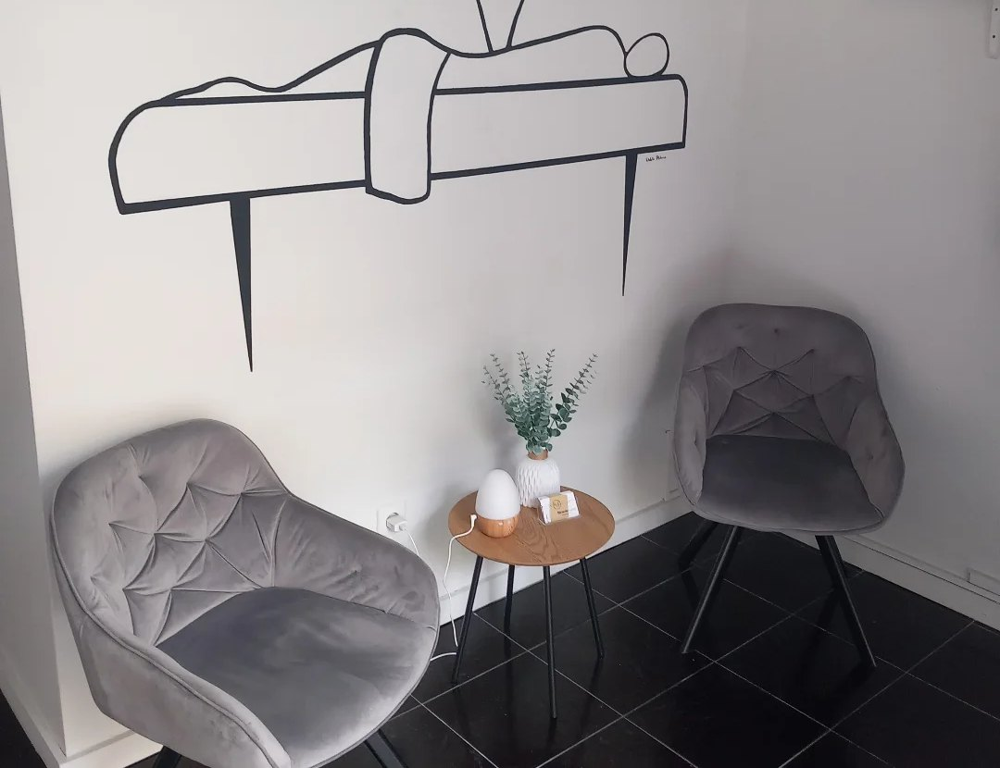
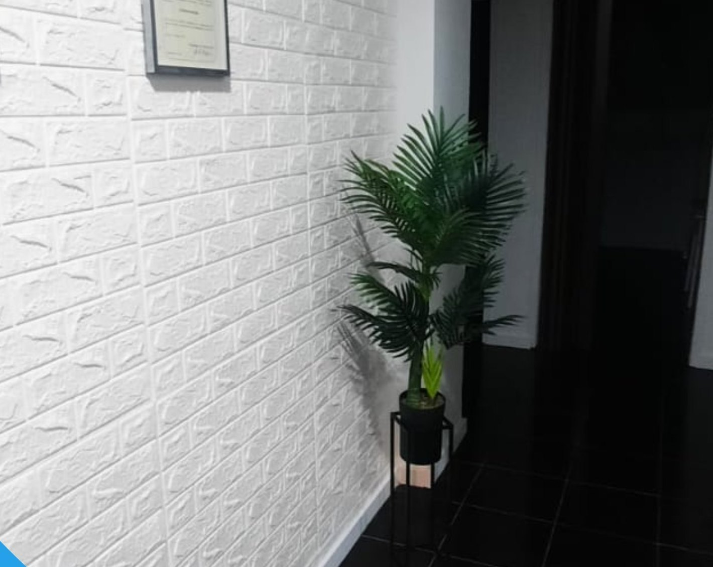

Pescoço e cervical
Quando sente
- Dor e rigidez no pescoço
- Tensão que sobe para a cabeça
- Postura “curvada” ao telemóvel
Como ajudo
- Manipulação
- Massagem terapêutica
- Exercícios e orientação postural
26 anos de experiência em quiropatia e medicina desportiva a tratar lesões musculoesqueléticas e problemas de coluna — com uma abordagem de prevenção, terapia e reabilitação feita à sua medida.
Uma dor na coxa pode ter origem noutra parte do corpo. Uma tensão na cervical pode trazer dores de cabeça. Por isso, cada consulta começa por avaliar o corpo como um todo — para tratar a origem do problema e não apenas o sítio onde dói.
Avaliação do corpo como um todo e explicação clara de onde vem realmente a dor.
Manipulação, massagem terapêutica, libertação miofascial, eletroestimulação ou ventosoterapia — conforme o seu caso.
Orientação postural e exercícios para manter os resultados e evitar que a dor volte.
de experiência em quiropatia e medicina desportiva
de classificação média no Google
avaliações de pacientes no Google
recomendam no Facebook
O Ricardo já trata as minhas lesões há cerca de 20 anos! Sempre com enorme profissionalismo, empenho e simpatia.
Grande profissional. Entrei quase sem poder andar e ajudou-me muito.
Espaço acolhedor, com um ambiente descontraído que ajuda a quebrar qualquer receio inicial.
Excelente profissional, sempre disponível para qualquer emergência e sabe o que faz. Recomendo 100%.
Ambiente agradável, profissional muito atencioso, e a massagem nem se fala — estou como novo.
Nem sempre a dor vem exatamente do sítio onde sentimos. Ele foi avaliando o meu corpo e explicou-me de onde vinham realmente as minhas dores.
Excelente. Recomendo vivamente!
“Ou sais assado, ou sais curado.” — um paciente, com humor 😁
Ver todas as avaliações no GooglePrevenir é a chave para a performance. Da corrida ao trail, do ciclismo ao triatlo — tratamento e prevenção de lesões para quem não quer parar.


Consultório próprio na Senhora da Hora, em Matosinhos: tratamentos personalizados, das massagens terapêuticas às relaxantes, para aliviar as dores musculares e revitalizar corpo e mente.
Diga-me onde dói e quando lhe dá jeito. Respondo pelo WhatsApp com a próxima disponibilidade.
As marcações são confirmadas após o pagamento de uma taxa de reserva de horário — evita faltas de última hora e garante mais disponibilidade para todos.